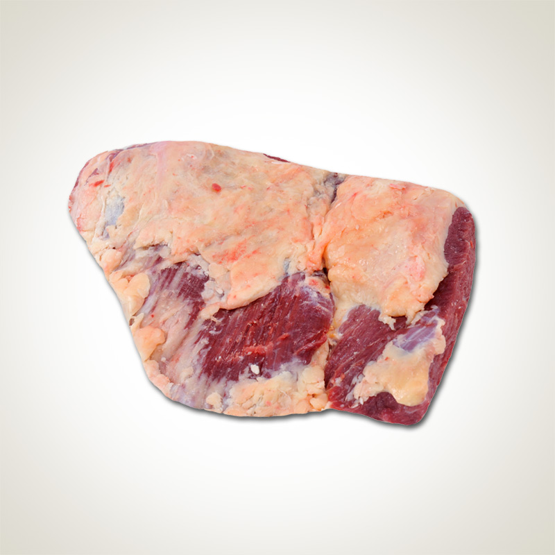
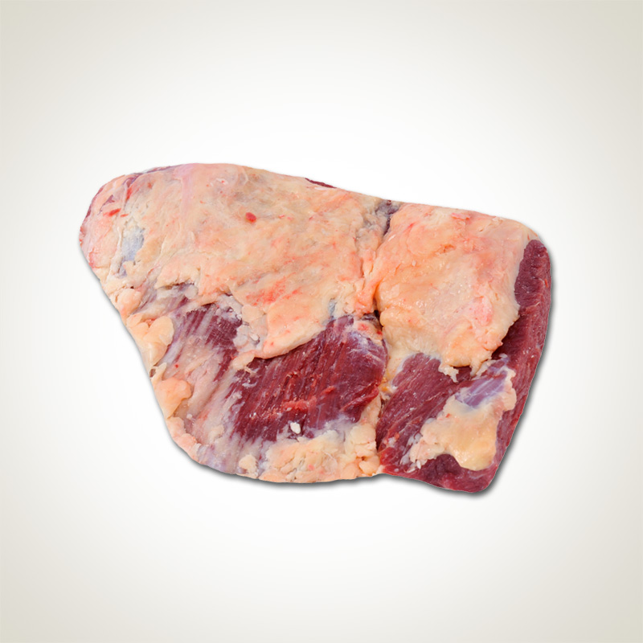

Quem somos
Bem-vindo ao nosso açougue de carnes, onde a qualidade e o sabor se encontram! Somos uma equipe dedicada de
especialistas em carnes, comprometidos em fornecer os melhores produtos para os amantes de churrasco e
gastronomia.
Nossa História:
Com uma tradição de 40 anos no ramo da carne, nossa empresa foi fundada com a visão de oferecer aos nossos
clientes uma experiência excepcional de compra e um deleite para os paladares mais exigentes. Desde o início,
nos esforçamos para ser referência em qualidade, variedade e atendimento personalizado.
Seleção Premium:
Na escolha dos produtos, buscamos apenas as melhores carnes disponíveis. Trabalhamos em parceria com
fornecedores cuidadosamente selecionados, que compartilham dos nossos altos padrões de qualidade. Cada corte é
escolhido a dedo, levando em consideração a marmorização, a maciez e o sabor inigualáveis.
Atendimento Personalizado:
Nosso time de especialistas em carnes está sempre pronto para ajudar e oferecer orientações personalizadas.
Entendemos que cada cliente tem suas preferências e necessidades únicas, e estamos aqui para garantir que sua
experiência seja excepcional. Desde a escolha do corte perfeito até dicas de preparo, estamos à disposição
para atender suas demandas.
Compromisso com a Qualidade:
A qualidade é a nossa prioridade número um. Mantemos rigorosos controles de higiene e segurança alimentar em
todas as etapas do processo, desde a seleção e armazenamento até a embalagem e entrega. Além disso, investimos
em equipamentos de última geração para garantir que as carnes sejam tratadas com o máximo cuidado, preservando
sua frescura e sabor.
Paixão pela Carne:
Somos verdadeiros apaixonados por carne e pelo prazer de saborear um bom churrasco. Nossa missão é
compartilhar essa paixão com você, proporcionando os cortes mais suculentos e saborosos para suas refeições.
Acreditamos que a carne de qualidade é uma experiência gastronômica que deve ser apreciada em sua plenitude.
Visite-nos hoje mesmo e descubra um mundo de sabores no nosso açougue de carnes. Estamos ansiosos para
recebê-lo e ajudá-lo a criar momentos inesquecíveis ao redor da mesa. Sinta-se à vontade para explorar nossa
variedade de cortes, conversar com nossa equipe especializada e encontrar a carne perfeita para satisfazer o
seu paladar exigente.
Seja bem-vindo ao mundo das carnes premium!
Nossos cortes
Cortes nobres

Bife Ancho
O bife ancho é um corte popular nos países da América do Sul, principalmente na
Argentina.
No
Brasil, a carne é chamada de filé ou bife de costela e, na França, é o famoso entrecôte (ou entrecosto). É uma
peça macia e muito suculenta!
Retirada da parte dianteira do contrafilé, geralmente, possui ótimo nível de
marmoreio. O nome ancho
significa
largo,
em português, e se dá porque o bife deve ter no mínimo 4 cm. É uma carne que merece fazer parte de
seu
churrasco!
Bife de Chorizo
O bife de chorizo é outro corte muito apreciado pelos argentinos. A peça,
retirada do centro do
contrafilé,
também se destaca pela maciez e tem uma camada de gordura na lateral.
A carne tem menos marmoreio que o vizinho bife ancho,
já que sua gordura fica concentrada na lateral, e não
entre os músculos do animal.
O corte é largo e pode chegar até 6 cm. É uma peça saborosa, que funciona muito
bem
para o churrasco!
Short Ribs
O short rib é um corte dianteiro, também chamado no Brasil de acém com osso. A
carne possui nível
alto de marmoreio,
responsável por sua maciez.
A extensão de suas fibras e a gordura entremeada tornam a carne uma excelente opção para o churrasco,
já que
proporcionam textura e sabor incríveis.
T-Bone
O T-Bone é um corte bem popular nos Estados Unidos, mas que também faz sucesso nas
terras brasileiras.
Seu nome se dá por conta do osso em formato de T no qual a carne está ligada.
Retirada da parte traseira do animal,
a peça é composta por filé-mignon de um lado e contrafilé do outro. A
carne combina nível médio
de marmoreio com camadas de gordura laterais, que a tornam muito macia e
supersaborosa.
Prime Rib
O prime rib é a versão com osso de uma carne já citada, o bife ancho. A peça
conta com bom marmoreio,
o que a torna macia e garante um sabor irresistível.
O osso é responsável
por deixar o sabor ainda mais marcante, além de conferir um ótimo visual. É uma carne
que
irá elevar o nível do seu churrasco!
Cortes Exóticos
 

Avestruz
A carne de avestruz é magra porque, apesar de ser vermelha, a gordura fica
concentrada na pele, assim
como nas outras aves.
A carne de avestruz também é mais natural, pois os animais são criados sem muitos medicamentos ou hormônios
Coelho
A carne do coelho é branca, macia e extremamente saborosa, possui um baixíssimo
teor de gordura e
colesterol
e com mais proteína que as demais, um alimento quase perfeito, por isso é tão apreciada na alta
gastronomia européia,
principalmente na França, onde o coelho é mais consumido que o frango.
Pato
De textura delicada e sabor marcante, o Pato Inteiro é uma das mais sofisticadas
iguarias da culinária
internacional,
mesmo sendo simples de preparar. É uma ótima fonte de consumo de proteínas de alto valor,
além de
ser uma carne extremamente saborosa.
Javali
A carne do javali tem um sabor próprio, exótico, típico de animais de caça; não
apresenta as estrias
gordurosas
presentes na carne de suíno e tem uma cor vermelha forte, mais escura que a de porco doméstico e
muito mais saborosa.
Jacaré
A carne de jacaré é uma carne muito saborosa. Para quem ainda não provou, ela tem a
textura parecida com
a do peito de frango e um
sabor similar ao do peixe. É uma carne branca, com 0% de colesterol, rica em
proteína
e que não recebe nenhum tipo de componente químico